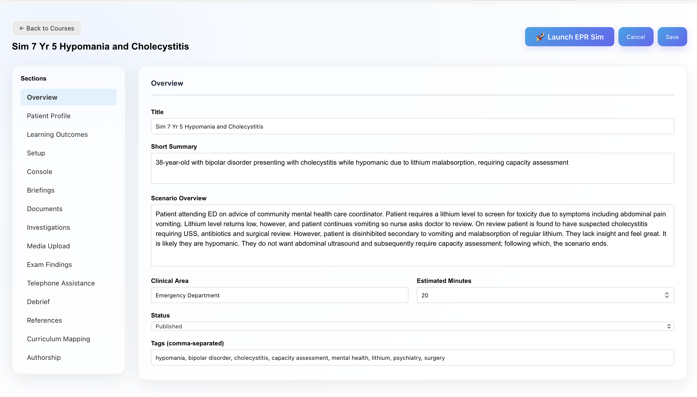
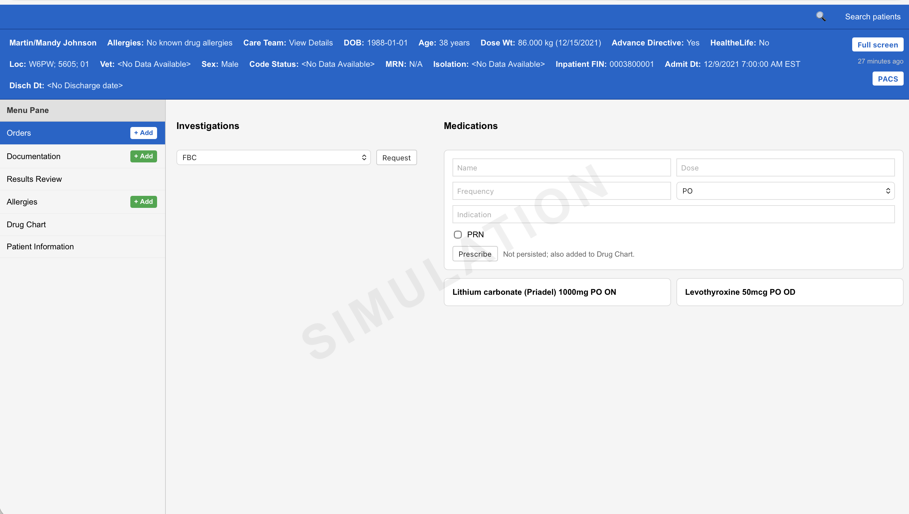
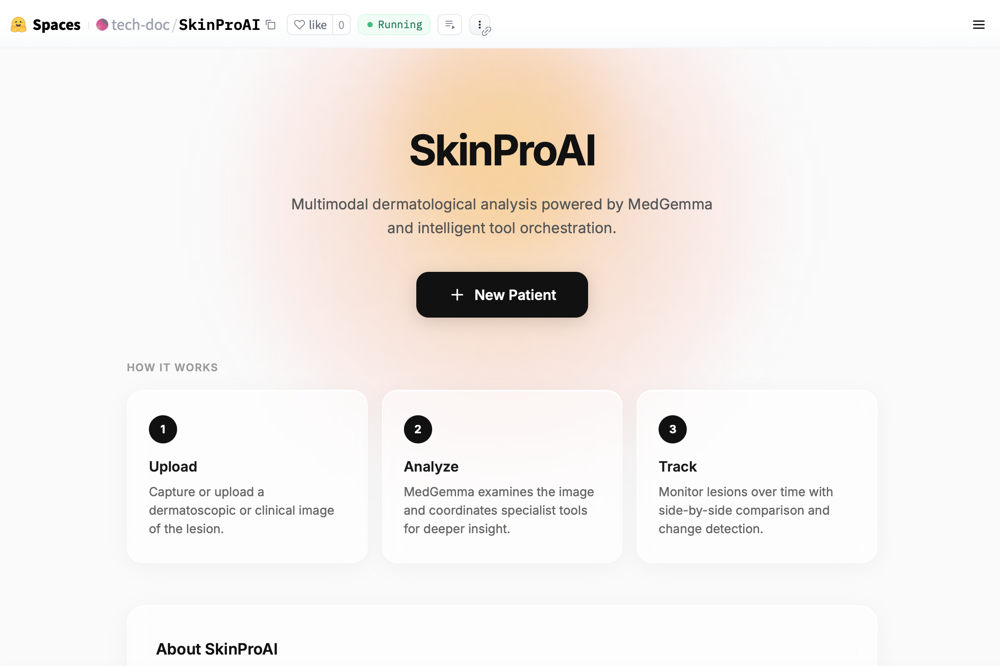
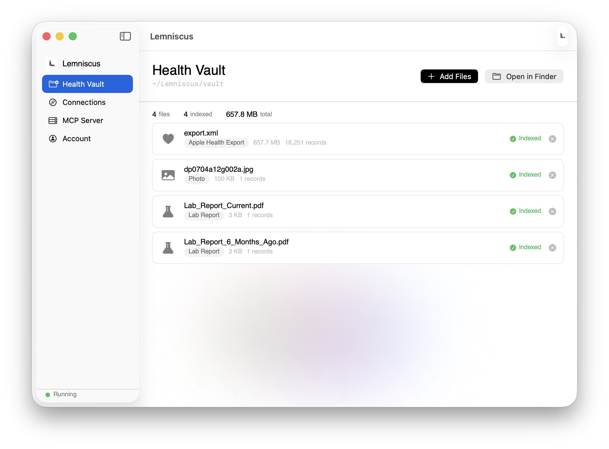
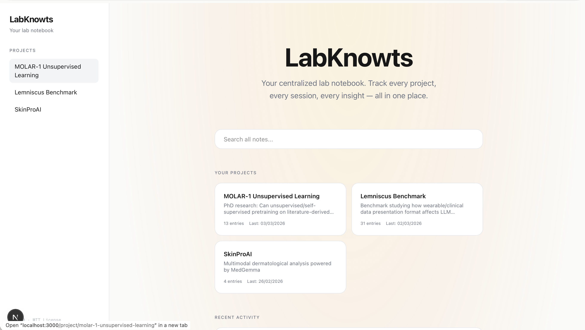
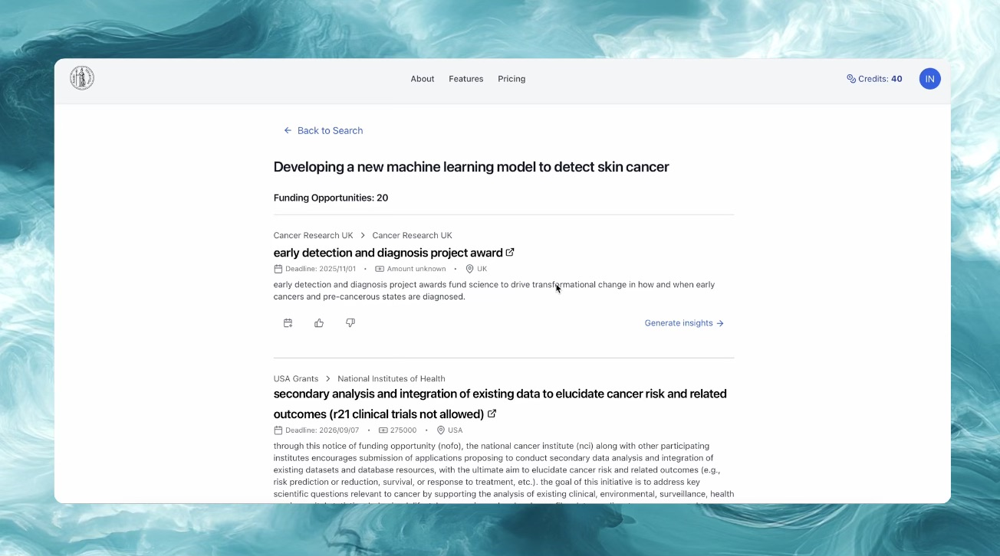
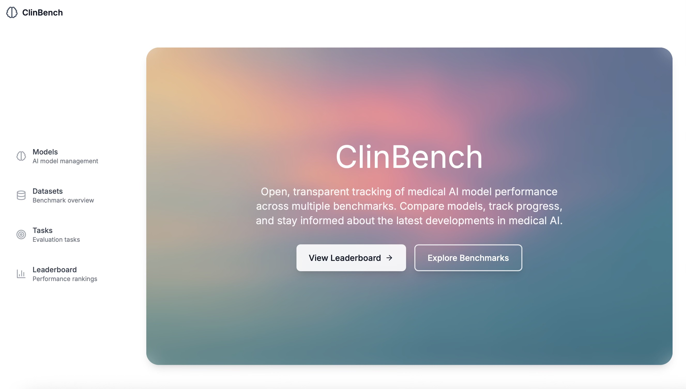

Web application simulating electronic patient records for hospital clinical simulations. Built from a real need — existing tools didn't replicate EPR workflows. Sprint-developed MVP now in live use with ongoing clinician feedback.

Agentic clinical AI system for dermatological assessment, built for the Kaggle MedGemma competition. Orchestrates specialist diagnostic tools via Model Context Protocol — SAM2 segmentation, ConvNeXt classification, Grad-CAM attention maps — around a foundation vision-language model. Patient-facing upload, analysis, and longitudinal tracking workflow.
Watch demo
Model Context Protocol server enabling AI agents to query and analyse Apple Health wearable data. Companion Swift macOS desktop app for local data management. Early-stage research alongside exploring how data presentation format affects LLM diagnostic reasoning.

MCP server with a React web app for visualising research notes. Temporally saves LLM outputs as structured lab notes — acting as a context bank across AI-assisted sessions. Cross-project search, dimensional forking for experiment branching, and timestamped logging. Built to solve my own workflow problem; used daily.

AI-powered research platform with FAISS semantic search for healthcare researchers. Obolus — a clinical research grant search engine — shipped live on GCP. Piloted in an NHS trust. NHS Clinical Entrepreneur Programme and London Digital Health Launchpad.

Open web platform for tracking clinical LLM research benchmarks. Aggregates and compares model performance across medical tasks and datasets, providing transparent leaderboards and benchmark exploration.
Clinical scoring tool translating facial trauma assessment criteria into structured digital workflows for emergency and surgical settings.
Building a 6,346-image oral lesion dataset (OMID) from open-access literature using Gemini extraction pipelines. Training self-supervised models (SimCLR, BYOL, DINO) for lesion classification with external validation against published datasets. Preprint 2026.
Ensemble approach blending MedSigLIP (15 models: 3-seed × 5-fold) and ConvNeXt (5-fold) at a 65/35 weighting. Metadata-driven post-processing — conservative probability multipliers on rare classes informed by EDA patterns — lifted balanced accuracy from 0.511 to 0.538 with zero retraining. K-fold combined training on MILK10k plus supplementary ISIC rare-class images pushed validation balanced accuracy to 0.83, avoiding the catastrophic forgetting seen with sequential fine-tuning.
Benchmarking study evaluating LLMs for summarising oral & maxillofacial surgery research using ROUGE, BLEU, and LLM-as-a-Judge approaches. Presented at IJOMS 2025.
Dual-qualified clinician (Medicine & Dentistry, GMC-registered) who builds digital health tools. Currently an Oral & Maxillofacial Surgery Education Fellow at Barts Health NHS Trust.
Alongside clinical work I design and ship products — from clinical education software to AI-powered research platforms. I have experience in clinical governance and quality assurance of digital health platforms, and have worked closely with clinical leadership to build high-quality educational programmes, improvement projects, and pathway integrations.
I am looking to bring this clinical and technical product experience into a team building AI tools that support care delivery.
AI for Classifying Oral Cancer and Precursor Lesions Using Visible-Light Photography
Goodmaker C, Bhandari R, Tappuni A, Pham T. Preprint, 2026
Clinicians' awareness of TMJ exercises for the management of temporomandibular joint dysfunction within a tertiary dental hospital
Boutros C, Oikonomou C, Goodmaker C. British Journal of Oral and Maxillofacial Surgery, 2025
Evaluating the quality of LLMs in summarising oral and maxillofacial surgery research papers
Ayub A, Goodmaker C, Bhandari R, Holmes S. British Journal of Oral and Maxillofacial Surgery, 2025
Evaluating The Quality of LLMs in Summarising Oral and Maxillofacial Surgery Research Papers
Ayub A, Goodmaker C, Holmes S, Bhandari R. International Journal of Oral and Maxillofacial Surgery, 2025
Naso-orbito-ethmoid fractures
Goodmaker C, Hohman MH, De Jesus O. StatPearls, 2023
Vitamin D repletion in primary hyperparathyroid patients undergoing parathyroidectomy leads to reduced symptomatic hypocalcaemia and reduced length of stay
Acharya R, Kopczynska M, Goodmaker C, Mukherjee A, Doran H. Annals of The Royal College of Surgeons of England, 2022
Paving the road to recovery: the colorectal surgery ERAS pathway during the COVID-19 pandemic
Goodmaker CJG, Kopczynska M, Meskell R, Slade D. British Journal of Surgery, 2021
Antibiotic prophylaxis for urinary catheter manipulation following arthroplasty: a systematic review
Roberts T, Smith TO, Simon H, Goodmaker C, Hing CB. ANZ Journal of Surgery, 2021
Nasal fracture
Goodmaker C, De Jesus O. StatPearls, 2020
Antibiotic prophylaxis for urinary catheter manipulation following arthroplasty: a systematic review
Roberts T, Smith T, Simon H, Goodmaker C, Hing C. Orthopaedic Proceedings (Bone & Joint), 2020
Identification of compounds with anti-human cytomegalovirus activity that inhibit production of IE2 proteins
Beelontally R, Wilkie GS, Lau B, Goodmaker CJ, et al. Antiviral Research, 2017